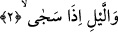

görüşüne göre ise en çok sekiz rekattır, İmam Şafii’nin mezhebine mensup âlimlerin
ekserisi de bu kanâattedirler. Sekiz rekatın sahih bir görüş olduğunu Şafii âlim İmam
Nevevi et-Tahkik’te ifâde etmiştir. Sahih olarak nakledilen bir habere göre Peygamber
Efendimiz (s.a.) Mekke fethi günü sekiz rekat kuşluk namazı kılmıştır.[125] Peygamber
Efendimiz (s.a.) bu namazı Ümmü Hani’nin evinde kılmıştır. Efendimiz bundan önce de
kuşluk namazı kılardı.
2. Ve sükûna erdiğinde geceye yemin ederim ki
Burada geçen “gece” kelimesinden maksad gece cinsidir. Yani belirli bir gece değil,
mutlak gece kasdedilmiştir. İbn Haluye’nin ifâdesine göre “ve’l-leyli” daha önce geçen
“ve’d-duha” üzerine matuf’tur ancak bu “leyl” kelimesinin başındaki vav kasem vavı
değildir. Çünkü bu vavın yerine, sümme veya fâ da gelebilirdi. Burada, sözgelimi;
“sümme el-leylu” demek mümkündür ve kural olarak “sümme” kasem olamaz.
“İza seca” ifâdesini biz yukarda “sükûna erdiğinde” şeklinde tefsir ettik. Gerçekten
“iza seca” demek geceleyin insanlar sükûna erdiklerinde demektir. Ancak insanların
sükûna ermesi anlamı mecazîdir. Mecâzın yönü; fiilin zamanına isnâd edilmesi
kabilindendir. Çünkü ifâdede insanların değil, gecenin sükûna erdiğinden söz ediliyor.
Dolayısıyla fiil zamana isnâd edilmiş; ancak bununla o zamanda bulunan insanlar
kasdedilmiş oluyor. Bu ifâdeyi; gecenin karanlığı çöktüğünde şeklinde tefsir etmek de
mümkündür. Bu takdirde mânâ; gecenin karanlığı çöktüğünde, yere adamakıllı
yerleştiğinde ve artık daha kararmayacak bir biçimde kemale erdiğinde... demek olur.
Yapmış olduğumuz bu tefsire göre gecenin karanlığının sükûna ermesi artık onun daha
fazla kararamayacak bir duruma gelmesi demek olur. Bu da anlaşılacağı üzere gecenin
karanlığının adamakıllı şiddetlendiği ve doruk noktasına erdiği zamandır. İşte gece tam
o noktada istikrara ve sükûna kavuşur. Bu noktadan itibaren yeniden karanlık çözülmeye
başlar. Şu halde gecenin karanlığının sükûna ermesi mecâzî bir ifâde olmuş olur.
Nitekim buradaki mecazı görmek için şöyle örnekler verebiliriz. Arapçada denizin
dalgalarının sükûna erdiğinin ifâde edilmesi için “seca el-bahru” derler. Bu kökten
türeme olarak “leyletun sâciye” ifâdesi kullanılır. Bunun anlamı; hiçbir esinti olmayan
sâkin gece demektir. Bâzı âlimlere göre “iza secâ” demek insanlar sükûna erdiğinde ve
ses seda kesildiğinde demektir.
İmam Cafer Sadık (r.a.)’ın bu konuda şöyle bir yorumu nakledilir: Okuduğumuz
âyetteki “duha”dan maksad Allah’ın Hz. Mûsâ (a.s.) ile konuştuğu vakit, “leyl”den
maksad da mirac gecesidir.
Bu, ya Hz. Muhammed Mustafa (s.a.)’in aydınlık yüzüne işârettir, ya da onun siyah
saçından kinâyedir.